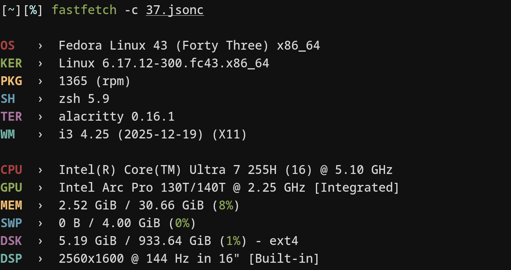

Setup
Mouse: G102 800dpi x1.8 no raw;
Cursor-size: x0.6;
Keyboard: O2C;
Typing: Alternate;
Skin: a;
Offset: -22ms.
Mouse: G102 800dpi x1.8 no raw;
Cursor-size: x0.6;
Keyboard: O2C;
Typing: Alternate;
Skin: a;
Offset: -22ms.

04.09.26
Pulseaudio config -
daemon.conf:
default-sample-channels = 6 # default 2
default-channel-map = front-left,front-right,rear-left,rear-right,front-center,lfe
default-fragments = 4
default-fragment-size-msec = 5